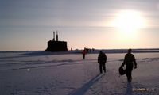

I am a runner. I wasn't always as dedicated to running as I am now but growing up and playing sports, I was always one of the fastest and could run the longest. People think I am crazy because I will go on six hour runs just to enjoy being out in the woods. It is not for everyone, and I will never judge people who don't understand. Running does not feel like I am making myself go exercise. Rather I get impatient and irritable if I don't go relax on the trails for several hours. I have run six ultramarathons in the last five years and have two more planned this year and next year. During my peak running training, I average 10 to 12 hours a week on my feet. The picture is me on the middle podium for placing second in my age group in a race in Appling Georgia, June of 2016. It was 31 miles through the hot and sticky Georgia summer woods in 98 degrees and 100% humidity. Loved every minute of it.
Cover Art of the Book Matter
Science Fiction...Some Fantasy
My favorite genre of books is science fiction with some medium-core fantasy and historical fiction thrown in. I mostly read space opera novels. I have too many favorite authors and books to list, but a couple to share if you are interested in space opera is Iain M Banks, Jay Allen, and Alastair Reynolds. I read about 25 books a year. Statistics pulled from my kindle and audible app. You might wonder how someone like me has time to read, work and run so much, and with a family. I don't have the time. Instead, I listen to audiobooks when I am running. I even have my audible play speed set to 1.5x to get through them faster. If I had the time, I probably would read from a book or kindle more but listening to them while running is super convenient and entertaining. Music gets old quick. The picture is the cover art to the book Matter by Iain M Banks which was the first book of his that I read. I rate it in the middle of his Culture series books which are all great reads.
Hiking at Walnut Creek 2021
Having Fun with My Family
My wife's name is Lindsay, and we have a two-year-old son, Alex. We spend as much time as we can outdoors when the weather is not too hot or cold. Alex has had a lot of firsts in the last year. The picture shows Alex on his first hike at Walnut Creek recently. He's been on many hikes before this, but this was the first where we didn't have the stroller with us as back up. Alex loves going to the zoo and gets to visit about every few weeks. His favorite animals are the sea lions and the giraffes. Alex recently learned to ride a scooter and a strider bike. Alex loves to read too. He looks forward to evening story time can get through five or six board books a night. He can't read yet but can tell the stories from memory.
Professional Experience
Afghanistan July 2004
United States Marine Corps
I enlisted in the Marine Corps July of 2001 after graduating high school. A few of my friends and I didn't have any college plans at the time, so why not join the hardest of the services. The Marine Corps was awesome, and I was successful. I became a CH-46 helicopter mechanic. In 2004 I deployed to Afghanistan in support of Operation Enduring Freedom and spent seven months assigned to the 22nd Marine Expeditionary Unit. While deployed, one of our helicopters had crashed landed in the mountains in an enemy controlled area. We could not just leave it there. So over two days, all the critical components were stripped, and the broken helicopter was lifted out by another larger helicopter. This picture was taken by one of my friends who flew on the mission. Also in 2004, I was nominated and selected for a Marine Officer commissioning program where I would attend college while on active to earn a degree and attend Marine Officer training. I was promoted to the rank of Staff Sergeant prior to earning a commission as an Ensign in the US Navy.

Visiting the North Pole 2011
Unitied States Navy
I was commissioned as a Navy Officer in May of 2008. The original plan was to become a Marine Officer as I was participating in a Marine Officer commissioning program, however I was approached and given the opportunity to volunteer for Navy submarine service based on my academics and performance. I made a good decision. I volunteered for submarine service. Like the Marine Corps, the submarine force is the Navy most demanding job. I have served onboard two submarines, the USS Seawolf, a fast attack submarine stationed in Bremerton WA, and the USS West Virginia, a ballistic missile submarine stationed in Kings Bay Georgia. I have also served at two demanding shore assignments. One in Whidbey Island WA and the other in Bellevue NE at United States Strategic Command. I am retiring from the Navy in August of 2022 after 21 years. I am excited to start a new and challenging career and raise my family in Omaha. I took this picture in April of 2011 while walking on the ice at the North Pole. That is a submarine surfaced through the ice in the background. It was an awesome experience deploying to the arctic and conducting challenging under ice operations developing future tactics and advertising what submarine force can do.
Marine Corps Ball 2007
Education
In the Marine Corps, my formal training consisted of CH-46 airframe maintenance, hydraulic system troubleshooting and repair and fiberglass rotary blade maintenance. While participating in the Marine Officer training program, I attended Eastern Michigan University earning a Bachelor of Science in Mathematics and Military Science in 2008. In the Navy, my formal training consisted of graduating from Naval Nuclear Propulsion Pipeline Training program, qualifying Engineer Officer on the S6W reactor and propulsion plant, qualifying submarine officer, and qualifying for submarine command. I earned a Master of Engineering Management from Old Dominion University in 2020. I am currently enrolled in Bellevue University studying software development. My academic performance has been outstanding earning a 3.5 GPA or above in all curriculums attended. The picture is my wife Lindsay and I attending the University of Michigan Marine Corps Birthday Ball in 2007 while in college.